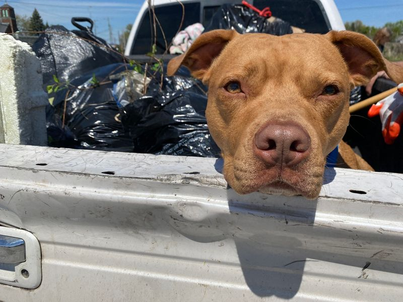

Timeline photos
HOUSELESS CLEANUP CREW UPDATE
I was out of town last week picking up my son from college. So we didn't do trash last week.
But the week before that our group of homeless people cleaned up around the Dollar store on East Exchange by the university, And then we went to South Street and cleaned up a field where one of our workers has pitched a tent for a while.
It's interesting to see the age of trash. It feels like there is some trash that has been there for years. So, it's nice to get that out of the way.
Our friend Rosco got to come with us. He is such a good boy. He just sat in the back of the truck the entire time.
Today is rainy. I personally don't love cleaning up trash in rainy, cold weather. But I guarantee we'll have a full crew.
A friend of mine asked me how it is that I can get homeless people to work. I told him that the only problem I have is running out of money for all the people that DO want to work.
I have people who can barely walk, picking up trash because they want to work. Randy has one lung... he'll work any time I can offer to pay him. A woman had a sprained arm last week and she worked the entire time with one arm.
This program is funded entirely by donors like you. And I'm super excited to announce that we are now officially a charity here on Facebook. Hopefully that will make it easier to donate. Let me know if you agree or if you prefer other ways.
So, if you are able, we'd greatly appreciate your donation.
Thank you so so much for all your support.